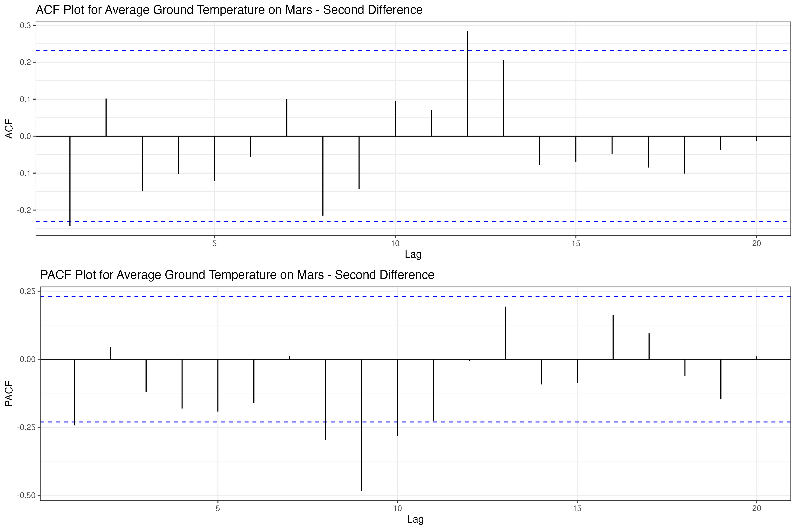

| Data Series | Stationarity Method |
|---|---|
| Average Ground Temperature on Mars | First Difference |
| Atmospheric Pressure on Mars | Second Difference |
| ARKX Stock Adjusted Close | First Difference |
| AVAV Stock Adjusted Close | First Difference |
| Treasury NASA Outlays | First Difference |
| Google Trends Space Exploration Term | First Difference |
| Weather Satellite Launches | First Difference |
| Operational Satellites Over Time | Second Difference |
5 Univariate TS Models (ARIMA/SARIMA)
The code used in this section is available here.
5.1 ARIMA
During the previous EDA section, the following work that supports the correct section was conducted:
- We performed an initial determination on whether the data is stationary or non-stationary (see Section 4.5).
- Since the series were found to be non-stationary, we differenced them.
- We plotted the differenced data (see Section 4.6), including the ACFs and PACFs (see Section 4.7 and Section 4.8), and comments were provided throughout.
- Then, with the Augmented Dickey-Fuller Test, we showed that all the series were now stationary (see Section 4.9).
It was also found that log() transformations were not useful for any of the series. With this work, we can proceed to begin our ARIMA modeling.
5.1.1 Determining p,d, and q
On the previous EDA analysis, we determined the following to be the d values for each series:
We can also use the respective ACF and PACFs plots to determine the values of p and q:



Mars Temperature
p: 0, 1,2d: 1q: 0, 1, 2, 3
Mars Pressure
p: 0, 1,2,3d: 1, 2q: 0, 1,2,3,4,5
ARKX
p: 0d: 1q: 0
Perhaps a random walk model.
AVAV
p: 0d: 1q: 0
Perhaps a random walk model.
Treasury NASA Outlays
p: 0, 1, 2, 3d: 1q: 0, 1, 2, 3, 4
Google Trends
p: 0, 1, 2d: 1q: 0, 1, 2
Launches
p: 0, 1,2,3,4,5d: 1q: 0, 1
Satellites
p: 0, 1d: 1, 2q: 0, 1
5.2 SARIMA
SARIMA models have been moved to Homework 4.